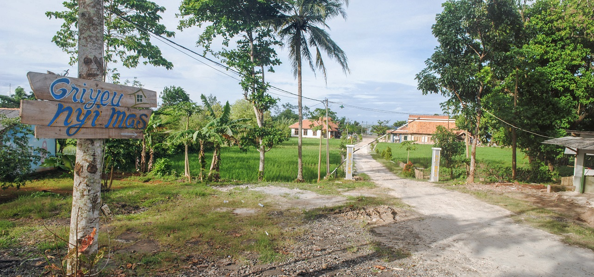
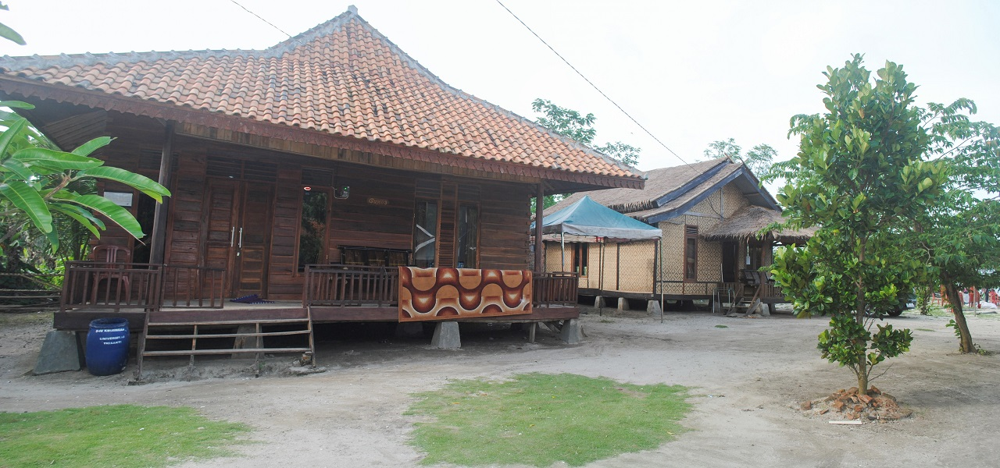
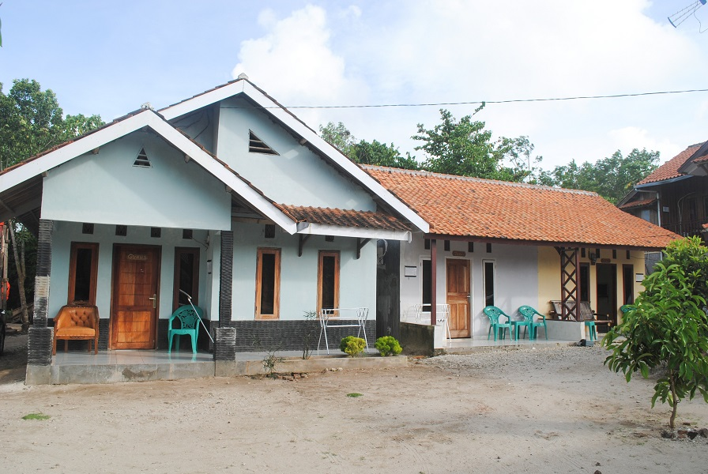
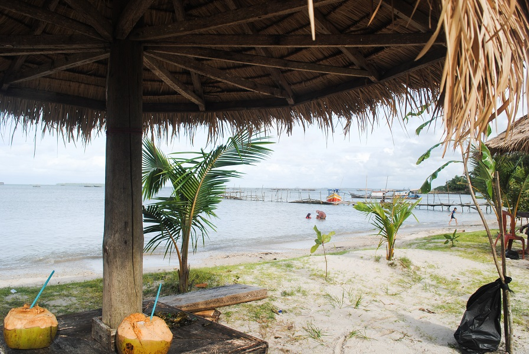
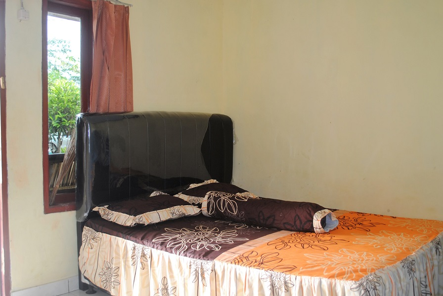
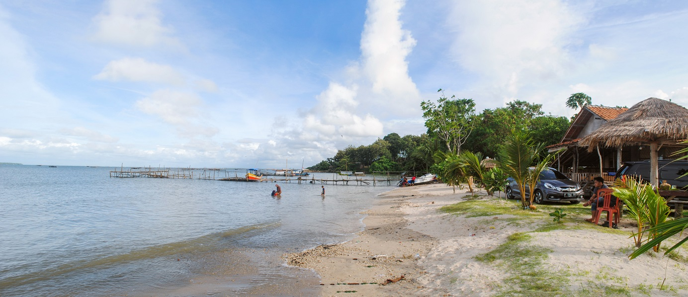

Villa Griyeu Nyimas Tanjung Lesung Banten
Dec 25, 2020 posted by Admin
Apakah anda beranggapan bahwa berwisata dan menginap di Tanjung Lesung adalah liburan berbiaya mahal? Persepsi Tanjung Lesung adalah wisata yang mahal perlu diluruskan kembali karena faktanya banyak terdapat villa atau resort pinggir pantai di kawasan Tanjung Lesung yang biaya sewanya murah. Villa murah di Tanjung Lesung ini sangat cocok untuk liburan baik untuk keluarga maupun kelompok atau group pertemanan. Akomodasi yang tersedia lebih dari cukup dan memiliki fasilitas yang memadai.
Salah satu villa di Tanjung Lesung yang berlokasi di pinggir pantai yang kami rekomendasikan adalah Villa Griyeu Nyimas Tanjung Lesung. Villa Griyeu Nyimas Tanjung Lesung memiliki keistimewaan tersendiri karena air lautnya yang tenang tanpa ombak sehingga bangunan villa dapat dibangun sangat berdekatan dengan bibir pantai. Anda sekeluarga dapat menikmati sensasi menginap di villa yang berjarak hanya sekitar 5 langkah dari bibir pantai. Pekarangan villa adalah pantai! didukung dengan kondisi laut yang tenang sehingga cocok untuk liburan keluarga yang membawa anak kecil. Dengan air yang bersahabat layaknya kolam renang, anak-anak dapat dengan bebas bermain air di laut tanpa perlu khawatir karena sangat anman. Penasaran seperti apa Villa Griyeu Nyimas Tanjung Lesung? Simak ulasannya berikut ini.
 Terdapat banyak villa villa murah di pinggir pantai di Tanjung Lesung. Salah satunya adalah Villa Griyeu Nyimas Tanjung Lesung. Lokasinya dekat dengan jalan raya sekitar 100 meter. Memasuki gerbang menuju komplek villa terdapat persawahan di kiri dan kanan jalan yang tampak asri menambah keindahan dari villa ini. Pengelola villa dengan mudah dapat ditemui di bangunan terdepan dari kompleks villa. Sambutan bersahabat dari pengelola villa membuat anda seakan berada di rumah sendiri. Masyarakat di sekitar kawasan wisata Tanjung Lesung sadar wisata dan sangat welcome dengan pelancong baik lokal maupun wisatawan asing. Mereka dengan sangat senang akan melayani untuk memenuhi kebutuhan anda selama berwisata di tanjung lesung.
 memiliki kompleks villa berukuran cukup luas. Disekitar kompleks didominasi oleh tanah berpasir putih dan sedikit rumput hijau memperkuat kesan bahwa kita tengah berada di pantai. Unit-unit villa tersedia dengan bangunan dari tembok dan juga kayu seperti rumah di tepi pantai. Anda dapat memilih sesuai dengan selera dan kebutuhan. Terdapat pilihan unit villa kapasitas besar 1 kamar tidur dan 2 kamar tidur. Setiap bangunan villa adalah unik dan memiliki kelebihan tersendiri.
 Fasilitas yang tersedia di Griyeu Nyimas Tanjung Lesung cukup lengkap untuk mengakomodasi kebutuhan selama anda menginap disini. Antara lain Kamar tidur ber-AC, TV dan area parkir gratis. Villa juga menyediakan akses internet wifi gratis jadi tidak perlu khawatir anda akan tetap eksis di dunia maya. Disamping itu sinyal cellular di kawasan wisata tanjung lesung sangat baik. Peranan pemerintah yang mencanangkan kawasan tanjung lesung sebagai kawasan ekonomi khusus wisata tampaknya tak luput memperhatikan ketersediaan akses internet dan telekomunikasi dengan kualitas yang baik.
 terdapat unit pilihan antara lain yaitu Griyeu 1, 2, 3 dan Griyeu 4. Unit Villa Griyeu 1 berkapasitas 5 orang dilengkapi kamar mandi dan teras. Unit Villa Griyeu 2 berkapasitas 8 orang memiliki teras, ruang tamu, kamar mandi dan 2 kamar tidur. Unit Villa Griyeu 3 berkapasitas 10 orang memiliki teras, ruang tamu, kamar mandi, dapur dan 2 kamar tidur. Unit Villa Griyeu 4 berkapasitas 7 orang memiliki teras, ruang tamu, kamar mandi, dapur, mini bar dan 2 kamar tidur.
 Villa Griyeu Nyimas Tanjung Lesung juga menyediakan paket-paket untuk group antara lain: Griyeu nyimas gathering company packages, family gathering packages, meeting packages, beach camp packages, outbound packages dan juga griyeu nyimas adventure package ke Krakatau dan Ujung Kulon. Terdapat paket snorkling ke pulau Liwungan dan juga paket memancing menggunakan perahu tradisional nelayan anda dapat menikmati keindahan wisata bahari tanjung lesung yang eksotik.
 Soal makanan tidak perlu khawatir karena Griyeu Nyimas menyediakan pilihan menu makanan mulai dari nasi goreng dan beberapa menu seafood lainnya yang dapat anda pesan setiap saat. Tersedia juga paket barbecue dengan aneka pilihan ikan segar dan harganya sangat bersahabat. Pantai yang cantik, laut yang tenang dan nyaman serta ikan yang segar ditambah kelapa muda. Anda tentu tak ingin melewatkan barbecue party dengan suasana tepi pantai yang nyaman dan jauh dari hiruk pikuk perkotaan.
Creative . Design . Business